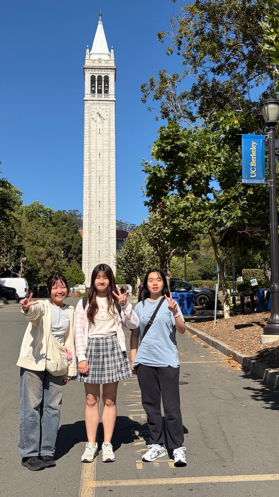

Research Experience
July 2026 - Feb. 2027
National Science and Technology Council (NSTC)
Undergraduate Researcher | Advised by Prof. Yu-Te Liao
- Awarded the NSTC College Student Research Scholarship for the project titled "An Integrated Electrochemical and Optical Smart Sensing Platform for Farm Animal Detection," grant: 115-2813-C-A49-182-E (NTD 6,000/month).
- Aimed to develop a dual-modal sensing platform for point-of-care animal disease detection. Focused on mitigating environmental interference and improving diagnostic reliability through data cross-validation.
July 2025 - Present
Wireless Integrated Microsystems Lab, NYCU
Undergraduate Researcher | Advised by Prof. Yu-Te Liao
-
Research Project: Two-Stage Operational Amplifier with Zero-Nulling Resistor
- Designed and sized a CMOS operational amplifier based on power, bandwidth, phase-margin, and output-swing requirements.
- Investigated the trade-offs among compensation capacitance, unity-gain bandwidth, phase margin, slew rate, and output swing, and compared frequency compensation with and without a zero-nulling resistor (Rz).
- Achieved 70.17 dB DC gain, 955.56 kHz unity-gain bandwidth, 82.96° phase margin, and 81.07 dB CMRR through circuit-level simulation.
-
Research Project: Low-Noise 170-dBΩ TIA for Very-Low-Current Sensing
- Implemented a TIA architecture combining a capacitive-feedback integrator, resistive-feedback differentiator, and DC current removal block for very-low-current sensing.
- Implemented a DC current removal feedback loop to prevent integrator saturation while preserving the AC signal, and verified stable operation with DC input currents from 0.3 nA to 10 nA.
- Optimized the input-stage transconductance and transistor sizing to reduce input-referred noise and power consumption, achieving 171 dB transimpedance gain and 1 MHz bandwidth while reducing power from 25.75 mW to 9.87 mW.
July 2026 - Aug. 2026
Chien Lab, UC Berkeley
Summer Research Intern | Advised by Prof. Jun-Chau Chien
- Underwent intensive training in advanced analog integrated circuits and data converters (ADC/DAC).
- Engaged in weekly journal club meetings discussing cutting-edge IC research.
-
Research Project: Continuous-Time Zoom ADC with Smart Tracking
- Implemented a system-level Verilog-A behavioral model of a continuous-time Zoom ADC, integrating coarse estimation, residue tracking, ΔΣ feedback, and fine quantization to reproduce the complete ADC conversion process.
- Implemented differential-mode (DM) and common-mode (CM) smart-tracking algorithms, including adaptive CDAC updates based on residue polarity and digital feedback.
- Resolved system-level issues involving integrator polarity, timing dependencies, and fine-quantizer saturation, and verified the integrated ADC through transient and single-tone FFT simulations.

With visiting student researchers at UC Berkeley